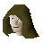
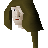
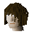
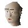
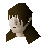
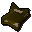

Underground Pass (underground)
Underground area at 2443, 9715 · Kingdom of Kandarin, Underground
Open on the world map → Open in knowledge graph → Surface: Underground Pass
NPCs
| NPC | Level | Spawns | Notable drops |
|---|---|---|---|
| 62 | 1 | Coins, Water rune, Iron bar, Herb drop table | |
| 62 | 1 | Coins, Water rune, Iron bar, Herb drop table | |
| 62 | 1 | Coins, Water rune, Iron bar, Herb drop table | |
| 53 | 2 | ||
| 39 | 21 | ||
| 27 | 9 | ||
| 24 | 10 | Herb drop table, Fishing bait, Coins, Iron mace | |
| 13 | 1 | Coins, Water rune, Body rune, Goblin mail | |
| 13 | 8 | Fishing bait, Herb drop table, Coins, Iron arrow | |
| 9 | 2 | ||
| 5 | 11 | Coins, Water rune, Body rune, Goblin mail | |
| 1 | 8 | ||
| 1 | |||
| 1 | |||
| 1 | |||
 Slave | 2 | ||
| 2 | |||
 Slave | 1 | ||
 Slave | 1 | ||
 Slave | 1 | ||
 Slave | 2 |
Ground items

Old journal x1